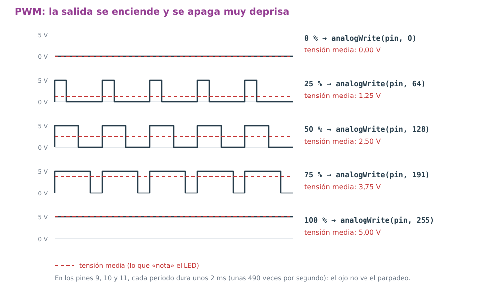
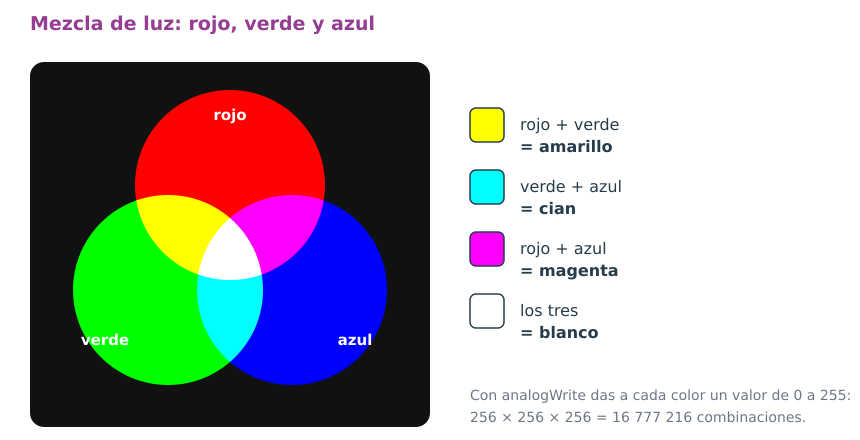
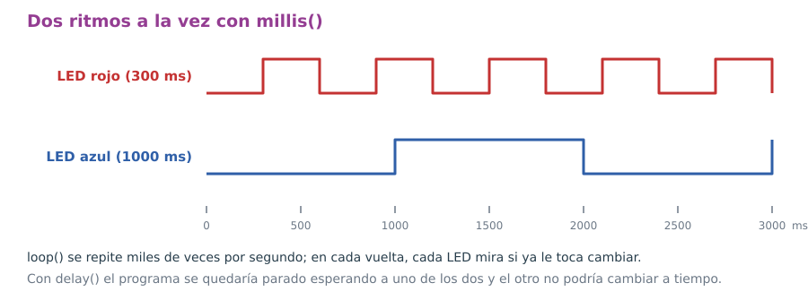

Qué vas a conseguir en esta página
Graduar el brillo de una luz con PWM, cambiar un valor de escala con map, repetir mientras se cumpla una condición con while, mezclar colores con el LED RGB usando funciones propias y medir el tiempo con millis() sin detener el programa.
Haz las prácticas y las tareas de esta página en la placa y en copias de tu Shield virtual: ya tiene el LED RGB en los pines 9, 10 y 11.
Una salida «a medias»: PWM
Un pin digital solo da 0 V o 5 V. Entonces, ¿cómo se consigue que un LED brille a la mitad? El truco es encender y apagar la salida muy deprisa, cientos de veces por segundo. Si está encendida la mitad de cada ciclo y apagada la otra mitad, el LED recibe de media la mitad de energía y lo ves brillar a medias: el ojo no es capaz de ver un parpadeo tan rápido. Esta técnica se llama PWM (pulse width modulation, modulación por ancho de pulso).
La fracción de cada ciclo en la que la salida está a 5 V se llama ciclo de trabajo. Cuanto mayor es, mayor es la tensión media de la salida:
\[V_{media}=5\ \text{V}\cdot d\]
donde d es el ciclo de trabajo: el tiempo que la salida pasa a 5 V dividido entre lo que dura el ciclo completo.
\[d=\frac{t_{5\,V}}{T}\]

En Arduino no tienes que generar tú los pulsos: lo hace la función analogWrite(pin, valor), donde valor va de 0 (siempre apagado) a 255 (siempre encendido). Así, analogWrite(9, 128) deja el pin 9 a 5 V la mitad de cada ciclo.
Solo en los pines con ~
PWM solo funciona en los pines marcados con ~ en la placa: 3, 5, 6, 9, 10 y 11. En el shield, los que puedes graduar son los tres colores del LED RGB (9, 10 y 11). Los LED rojo (12) y azul (13) no tienen ~: con analogWrite solo se encienden (valores de 128 en adelante) o se apagan (por debajo).
Ahora tú: del porcentaje al valor
No se entrega ni cuenta para la nota: sirve para comprobar si lo has entendido.
Quieres que el rojo del LED RGB brille al 20 %, al 50 % y al 80 %. ¿Qué valor tienes que poner en analogWrite en cada caso y qué tensión media dará la salida? Haz la cuenta antes de mirar.
Ver la solución
| Brillo | Valor (255 · porcentaje / 100) | Tensión media |
|---|---|---|
| 20 % | 51 | 1 V |
| 50 % | 127 (vale también 128) | 2,5 V |
| 80 % | 204 | 4 V |
Cambiar de escala: map
Esa cuenta de pasar de una escala a otra es tan frecuente que Arduino trae una función que la hace: map(valor, desdeMin, desdeMax, hastaMin, hastaMax). Recibe un número de la primera escala y devuelve el que le corresponde, en proporción, en la segunda. Por ejemplo, map(40, 0, 100, 0, 255) da 102.
Trabaja con números enteros y corta los decimales: map(50, 0, 100, 0, 255) da 127, no 127,5. La usarás mucho en las páginas siguientes, para convertir la lectura de un sensor en un brillo o en un ángulo.
Ejemplo: el rojo del LED RGB se enciende por etapas, del 0 % al 100 %
// El rojo del LED RGB se enciende por etapas: 0 %, 20 %, 40 %, 60 %, 80 % y 100 %
const int RGB_ROJO = 9; // pin con ~: admite analogWrite
void setup() {
pinMode(RGB_ROJO, OUTPUT);
}
void loop() {
for (int porcentaje = 0; porcentaje <= 100; porcentaje += 20) {
int valor = map(porcentaje, 0, 100, 0, 255); // de 0-100 % a 0-255
analogWrite(RGB_ROJO, valor);
delay(600);
}
delay(1000);
}El bucle while
El bucle while repite un bloque mientras se cumpla una condición. Frente a lo que has visto en Python, la idea es la misma; solo cambia la forma de escribirlo: la condición va entre paréntesis y el bloque que se repite, entre llaves.
while (condición) {
// se repite mientras la condición sea cierta
}La condición se comprueba antes de cada vuelta. Si dentro del bucle nada hace que la condición llegue a ser falsa, el bucle no termina nunca y el resto del programa no se ejecuta. Por eso casi siempre hay dentro una variable que cambia en cada vuelta.
| Usa… | Cuando… | Ejemplo |
|---|---|---|
for | sabes de antemano cuántas vueltas hay que dar | tres destellos; 256 escalones de brillo |
while | el número de vueltas depende de algo que pasa mientras tanto | subir el brillo hasta llegar a un valor; esperar a que se pulse un botón |
Práctica: el LED que respira
No se entrega ni cuenta para la nota: sirve para practicar lo que necesitarás en las tareas y en el proyecto.
Este programa sube poco a poco el brillo del verde del LED RGB con un while y después lo baja con otro. Al segundo bucle le faltan tres cosas. Piensa qué condición tiene que cumplirse para seguir bajando, qué le pasa a la intensidad en cada vuelta y qué valor se envía al LED; después, rellena los huecos y pruébalo en Tinkercad y en la placa.
Abrir el programa con huecos
Es el programa de la práctica con algunas partes borradas. Cada ____ es una palabra, un número o un signo que ya has visto en esta página. Cópialo, sustituye cada hueco por lo que falta y pruébalo. Intenta primero hacerlo sin abrir esto: se aprende mucho más.
// El verde del LED RGB «respira»: sube poco a poco y baja poco a poco
const int RGB_VERDE = 11;
const int PAUSA_PASO = 5; // milisegundos entre un escalón de brillo y el siguiente
int intensidad = 0;
void setup() {
pinMode(RGB_VERDE, OUTPUT);
}
void loop() {
while (intensidad < 255) { // sube mientras no llegue al máximo
intensidad++;
analogWrite(RGB_VERDE, intensidad);
delay(PAUSA_PASO);
}
while (intensidad ____ 0) { // baja mientras no llegue a cero
intensidad____;
analogWrite(RGB_VERDE, ____);
delay(PAUSA_PASO);
}
}Ver el programa completo
// El verde del LED RGB «respira»: sube poco a poco y baja poco a poco
const int RGB_VERDE = 11;
const int PAUSA_PASO = 5; // milisegundos entre un escalón de brillo y el siguiente
int intensidad = 0;
void setup() {
pinMode(RGB_VERDE, OUTPUT);
}
void loop() {
while (intensidad < 255) { // sube mientras no llegue al máximo
intensidad++;
analogWrite(RGB_VERDE, intensidad);
delay(PAUSA_PASO);
}
while (intensidad > 0) { // baja mientras no llegue a cero
intensidad--;
analogWrite(RGB_VERDE, intensidad);
delay(PAUSA_PASO);
}
}Prueba a cambiar PAUSA_PASO: con 2 ms respira deprisa; con 15 ms, muy despacio.
El LED RGB: mezclar colores
El LED RGB son en realidad tres LED en una sola cápsula: uno rojo (red), uno verde (green) y uno azul (blue), con el cátodo común unido a GND. En el shield, cada color tiene su pin y su resistencia de 330 Ω. Fíjate en el orden, porque no es el de las letras RGB:
| Color | Pin | ¿Admite PWM? |
|---|---|---|
| Rojo | 9 | Sí (~) |
| Azul | 10 | Sí (~) |
| Verde | 11 | Sí (~) |
Como cada color va a un pin con PWM, puedes dar a cada uno un brillo de 0 a 255. La luz de los tres se suma: es una mezcla aditiva, como la de las pantallas.

En el LED real, los tres colores no brillan igual (el verde suele brillar más), así que el amarillo o el blanco pueden salir algo verdosos. No es un fallo de tu programa.
Funciones propias en C++
Para cambiar de color hay que dar tres analogWrite seguidos. Si eso se repite muchas veces, lo mejor es escribir una función, igual que hacías con def en Python. Frente a Python, en C++ se escribe primero lo que devuelve la función (void si no devuelve nada) y cada parámetro lleva delante su tipo:
void color(int rojo, int verde, int azul) {
analogWrite(RGB_ROJO, rojo);
analogWrite(RGB_VERDE, verde);
analogWrite(RGB_AZUL, azul);
}Después, en loop(), basta con llamarla: color(255, 255, 0); pone el LED en amarillo. La función se escribe fuera de setup() y de loop(), normalmente encima de ellas.
Ejemplo: el LED RGB pasa por seis colores
// El LED RGB pasa por seis colores con una función propia: color(rojo, verde, azul)
const int RGB_ROJO = 9;
const int RGB_AZUL = 10;
const int RGB_VERDE = 11;
const int ESPERA = 700;
void color(int rojo, int verde, int azul) {
analogWrite(RGB_ROJO, rojo);
analogWrite(RGB_VERDE, verde);
analogWrite(RGB_AZUL, azul);
}
void setup() {
pinMode(RGB_ROJO, OUTPUT);
pinMode(RGB_AZUL, OUTPUT);
pinMode(RGB_VERDE, OUTPUT);
}
void loop() {
color(255, 0, 0); // rojo
delay(ESPERA);
color(255, 255, 0); // amarillo = rojo + verde
delay(ESPERA);
color(0, 255, 0); // verde
delay(ESPERA);
color(0, 255, 255); // cian = verde + azul
delay(ESPERA);
color(0, 0, 255); // azul
delay(ESPERA);
color(255, 0, 255); // magenta = rojo + azul
delay(ESPERA);
}Ahora tú: dos colores más
No se entrega ni cuenta para la nota: sirve para comprobar si lo has entendido.
Añade al ejemplo el blanco y un naranja (mucho rojo, algo de verde y nada de azul). Prueba valores hasta que el naranja te convenza en la placa, no solo en Tinkercad.
Ver una solución
color(255, 255, 255); // blanco
delay(ESPERA);
color(255, 60, 0); // naranja
delay(ESPERA);El valor del verde para el naranja depende de tu LED: entre 40 y 90 suele quedar bien.
Esperar sin detener el programa: millis
delay() es cómodo, pero tiene un problema: mientras espera, el programa no hace nada más. No puede leer un pulsador ni cambiar otra luz. Si quieres que dos cosas pasen a ritmos distintos, o que el programa reaccione mientras espera, necesitas otra forma de medir el tiempo.
La función millis() devuelve los milisegundos que han pasado desde que se encendió la placa. Ese número crece muy deprisa, así que se guarda en una variable de tipo unsigned long: un número sin signo que llega hasta unos 49 días. Un int no sirve, porque se desborda en 32 segundos.
La técnica es siempre la misma: guardas el instante en que hiciste algo y, en cada vuelta de loop(), compruebas si ya ha pasado el tiempo que querías. Si ha pasado, lo vuelves a hacer y guardas el nuevo instante.
if (millis() - ultimo >= INTERVALO) {
ultimo = millis();
// lo que toca hacer cada INTERVALO milisegundos
}Ejemplo: dos LED con ritmos distintos a la vez
// Dos ritmos a la vez sin delay(): el LED rojo cambia cada 300 ms y el azul cada 1000 ms
const int LED_ROJO = 12;
const int LED_AZUL = 13;
const unsigned long RITMO_ROJO = 300;
const unsigned long RITMO_AZUL = 1000;
unsigned long ultimoRojo = 0; // instante del último cambio de cada LED
unsigned long ultimoAzul = 0;
int estadoRojo = LOW;
int estadoAzul = LOW;
void setup() {
pinMode(LED_ROJO, OUTPUT);
pinMode(LED_AZUL, OUTPUT);
}
void loop() {
unsigned long ahora = millis();
if (ahora - ultimoRojo >= RITMO_ROJO) { // ¿ya toca cambiar el rojo?
ultimoRojo = ahora;
estadoRojo = !estadoRojo; // de LOW a HIGH o de HIGH a LOW
digitalWrite(LED_ROJO, estadoRojo);
}
if (ahora - ultimoAzul >= RITMO_AZUL) { // ¿ya toca cambiar el azul?
ultimoAzul = ahora;
estadoAzul = !estadoAzul;
digitalWrite(LED_AZUL, estadoAzul);
}
}
En este programa no hay ni un delay(): loop() da miles de vueltas por segundo y en cada una mira los dos relojes. !estadoRojo significa «lo contrario de estadoRojo»: si valía LOW pasa a HIGH, y al revés.
Ahora tú: ¿y con delay?
No se entrega ni cuenta para la nota: sirve para comprobar si lo has entendido.
Intenta explicar por qué este comportamiento es muy difícil de conseguir con delay(). Después cambia el ritmo del rojo a 450 ms y comprueba en la placa que el azul sigue cambiando cada segundo exacto.
Ver la explicación
Con delay(300) el programa se queda parado 300 ms y el azul no puede cambiar en ese tiempo; para acertar los dos ritmos tendrías que calcular a mano todos los cambios y, en cuanto uno de los ritmos no es divisor del otro, la cuenta se complica muchísimo. Con millis() cada salida decide por su cuenta.
Si algo no funciona
| Lo que ves | Qué compruebas |
|---|---|
| El LED no se gradúa: se enciende de golpe o no hace nada | ¿El pin tiene ~? En el shield, solo el LED RGB (9, 10 y 11) admite PWM. |
| Los colores salen cambiados | El orden del shield es rojo en 9, azul en 10 y verde en 11, no el de las letras RGB. |
| El programa se queda «colgado» en un bucle | En un while, ¿cambia dentro la variable de la condición? Si no, el bucle no acaba nunca. |
Con millis() funciona unos segundos y luego se vuelve loco | ¿Guardas el tiempo en un unsigned long? Un int se desborda a los 32 segundos. |
Tarea PWM1 · Amanecer y anochecer
Programa con el LED RGB del shield esta secuencia, que se repite sin fin:
- El verde (pin 11) sube su brillo poco a poco de 0 a 255.
- Después hace lo mismo el azul (pin 10), y después el rojo (pin 9). Los colores que ya han subido se quedan encendidos.
- Los tres se quedan encendidos 1 segundo.
- El verde baja poco a poco de 255 a 0; después el azul, y después el rojo.
- Los tres se quedan apagados 1 segundo.
Las subidas tienen que hacerse con while y las bajadas con for. La pausa entre un escalón de brillo y el siguiente va en una constante, PAUSA_PASO, con un valor que haga que cada color tarde alrededor de un segundo en subir o en bajar: calcula tú cuál. Pruébalo primero en Tinkercad, en una copia del Shield virtual llamada Tarea PWM1 - Amanecer, y después en la placa.
Está conseguida cuando… la secuencia completa funciona en la placa con los colores en su orden, cada subida o bajada dura alrededor de un segundo, las subidas usan while y las bajadas for, y los pines y la pausa están en constantes.
Entrega. Guarda el programa como tarea_pwm1 (Archivo → Guardar como...) y graba con el móvil un vídeo corto de la placa haciéndolo todo, con el papel de tus iniciales y tu curso a la vista; llama al vídeo tarea_pwm1. Súbelos a la tarea Colección de programas (Arduino) de Moodle con Editar entrega y Guardar cambios, igual que en la tarea SD1, sin pulsar todavía Enviar tarea.
Tarea PWM2 · Colores secundarios
Haz que el LED RGB suba poco a poco su brillo, de 0 a 255, en tres colores secundarios: primero el cian, después el amarillo y por último el magenta. Al llegar al máximo, cada color se queda medio segundo y se apaga antes de empezar el siguiente.
Pista: para que el tono no cambie mientras sube, los dos colores que forman cada secundario tienen que tener siempre la misma intensidad, y el tercero, apagado. Mira la figura de la mezcla de la luz para saber qué dos colores necesitas en cada caso.
Tienes que escribir una función subirColor(int pinA, int pinB) que haga la subida de dos colores a la vez y los apague al final. loop() solo debe llamarla tres veces, una por color, sin repetir el bucle. En Tinkercad: copia del Shield virtual llamada Tarea PWM2 - Colores secundarios.
Está conseguida cuando… en la placa se ven el cian, el amarillo y el magenta en ese orden, cada uno con un tono uniforme mientras sube, y el programa usa la función subirColor con sus dos parámetros, sin bucles repetidos en loop().
Entrega. Guarda el programa como tarea_pwm2 (Archivo → Guardar como...) y graba con el móvil un vídeo corto de la placa haciéndolo todo, con el papel de tus iniciales y tu curso a la vista; llama al vídeo tarea_pwm2. Súbelos a la tarea Colección de programas (Arduino) de Moodle con Editar entrega y Guardar cambios, igual que en la tarea SD1, sin pulsar todavía Enviar tarea.
Lo que tienes que saber de esta página
- PWM enciende y apaga una salida muy deprisa; el ciclo de trabajo fija la tensión media: V = 5 V · d.
- analogWrite(pin, valor) da PWM de 0 a 255, solo en los pines con ~ (en el shield, el LED RGB: 9, 10 y 11).
- map(valor, desdeMin, desdeMax, hastaMin, hastaMax) pasa un número de una escala a otra, sin decimales.
- while (condición) repite mientras se cumpla la condición; algo dentro tiene que hacer que deje de cumplirse.
- El LED RGB mezcla la luz: rojo + verde = amarillo, verde + azul = cian, rojo + azul = magenta, los tres = blanco.
- Una función en C++: tipo que devuelve (void si nada), nombre y parámetros con su tipo.
- millis() da los milisegundos desde el encendido; se guarda en unsigned long y permite esperar sin detener el programa.